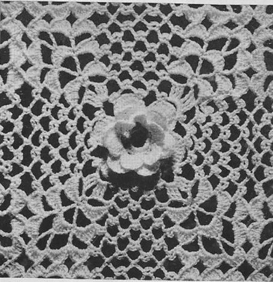

|
Beauty Rose Bedspread MATERIALS: Clark's O.N.T. Lustersheen, 55 skeins of White or Ecru, or 74 skeins of any color for double size spread; 46 skeins of White or Ecru, or 62 skeins of any color for single size spread. Milward's steel crochet hook No. 7. GAUGE: Each block measures about 5 inches square. For a double size spread, 90 x 110 inches, make 18 x 22 blocks. For a single size spread, 75 x 110 inches, make 15 x 22 blocks. FIRST BLOCK: Starring at center, ch 12 and join with sl st to form ring. 1st rnd: Ch 1, 24 sc in ring. Join with sl st in 1st sc made. 2nd rnd: * Ch 5, skip 3 sc, sc in next sc. Repeat from * around, ending with sc at base of ch-5 first made (6 loops). 3rd rnd: In each ch-5 loop make: 1 sc, 1 half dc, 5 dc, 1 half dc, 1 sc (6 petals). 4th rnd: Sl st in each st to center sc under 1st loop, * ch 5, sc in center sc under next loop. Repeat from * around, ending with sl st at base of ch-5 first made. 5th rnd: In each ch-5 loop make: 1 sc, 1 half dc, 1 dc, 5 tr, 1 dc, 1 half dc, 1 sc. 6th rnd: * Ch 7, skip 1 petal, sc in back of next sc of previous loop row. Repeat from * around. 7th rnd: In each ch-7 loop make: 1 sc, 1 half dc, 1 dc, 7 tr, 1 dc, 1 half dc, 1 sc. 8th rnd: Sl st to 1st tr of next petal, * ch 5, skip 5 tr, sc in next tr, ch 3, sc in same tr, ch 5, sc in 1st tr of next petal, ch 3, sc in same tr. Repeat from * around. 9th rnd: Sl st in 1st loop, ch 4 (to count as tr), 2 tr in same loop, ** ch 3, 3 tr in same loop, * ch 5; in next loop make: sc, ch 3, sc. Repeat from * once more, ch 5, 3 tr in next ch-5 loop. Repeat from ** around, ending with ch 2, dc in 4th st of ch-4 first made. 10th rnd: * Ch 5; sc, ch 3, sc in next loop. Repeat from * around, 11th rnd: ** In next loop make: 1 sc, 1 half dc, 5 dc, 1 half dc, 1 sc (a shell made); sc in next ch-3 loop, in next ch-5 loop make another shell as before; * ch 5; sc, ch 3, sc in next loop. Repeat from * once more, ch 5. Then repeat from ** around. 12th rnd: Sl st in each st to center dc of next shell, ** ch 5; in the sc between shells make: tr, ch 5, tr; ch 5, sc in center dc of next shell, * ch 5, sc, ch 3, sc in next loop. Repeat from * 2 more times, ch 5, sc in center dc of next shell. Repeat from ** around. l3th rnd: ** In each of next 3 loops make a shell as before; sc in next loop, ch 3, sc in same loop, * ch 5, sc, ch 3, sc in next loop. Repeat from * 2 more times. Then repeat from ** around. 14th rnd: Sl st to center dc of next shell, ** ch 5, dc between this and next shell, ch 5; in 3rd dc of center shell make: tr, ch 5, tr; ch 5, dc between this and next shell, ch 5, sc in center dc of 3rd shell, * ch 5, sc, ch 3, sc in next loop. Repeat from * 2 more times, ch 5, sc in center dc of next shell. Repeat from ** around. 15th rnd: ** Make a shell in each of next 5 loops; sc, ch 3, sc in next loop; * ch 5, sc, ch 3, sc in next loop. Repeat from * 2 more times. Then repeat from ** around. Fasten and break off. SECOND BLOCK: Work exactly as for first block to l4th rnd incl. 15th rnd: Make a shell in each of next 2 loops; in corner loop make: 1 sc, 1 half dc, 4 dc, sc in corresponding dc of corner shell of first block (always keeping right side of work on top), and complete shell on second block as before. * In next loop make: 1 sc, 1 half dc, 2 dc, sc in 3rd dc of corresponding shell on first block, and complete shell as before. Repeat from * once more. In next loop make sc, ch 3, sc; ** ch 2, sc in corresponding loop of first block, ch 2, sc in next loop back on second block, ch 3, sc in same loop. Repeat from ** 2 more times. *** In next ch-5 loop on second block make: 1 sc, 1 half dc, 2 dc, sc in 3rd dc of corresponding shell on first block, and complete shell as before. Repeat from *** once more. In corner loop make: 1 sc, 1 hdc, 1 dc, sc in corresponding dc of corner shell on first block, and complete shell. Finish remainder of rnd as for first block. THIRDBLOCK: Work exactly as for second block, joining on last rnd to one side of first block (adjacent to side joined before). FOURTH BLOCK: Work as for second block, joining on last rnd to one side of third block, and the adjacent side of second block. Make necessary number of blocks, joining each block on the last rnd as before.  HOME |